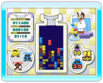
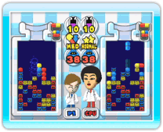
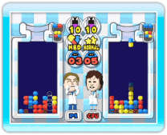

13 |
Dr. Mario spelen |
 |
Er zijn drie manieren om Dr. Mario te spelen: 
● CLASSIC Verwijder alle virussen om naar het volgende level te gaan. Telkens wanneer je een level voltooit, ga je naar een ander, moeilijker level. Als je met z’n tweeën speelt, moet je de virussen sneller verwijderen dan je tegenstander. Als de fles van je tegenstander vol is, win je ook. Hoe hoger het virusniveau, des te meer virussen een speler moet vernietigen. 
● VS. CPU Verwijder alle virussen sneller dan de computerspeler om te winnen. Als de fles van je tegenstander vol is, win je ook. 
● FLASH Verwijder alle knipperende virussen sneller dan je tegenstander om te winnen. Als de fles van je tegenstander vol is, win je ook. De knipperende virussen verwijder je op dezelfde manier als normale virussen. Als je in je eentje speelt, neem je het op tegen de computer. |
 |
 |
 |